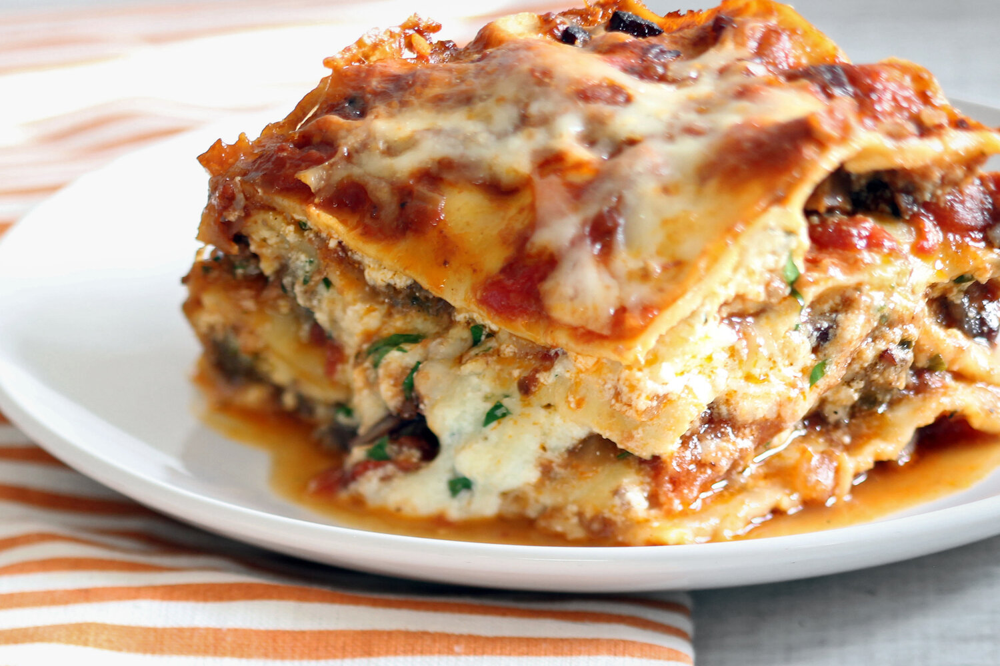

Lasagna recipe

Description
This lasagna recipe has “rainy Sunday cooking project” written all over it. But, if you’re short on time, you can make both the bechamel and the ragu earlier in the week and pop them into the fridge. You can also make a full tray of this lasagna in advance and freeze it unbaked. Once you do bake it, you’ll be grateful for the leftovers—reheat them uncovered in a 350 degree oven until warmed through and there are crispy bits around the edges.
The secret weapon here is the ragu. Still, you might ask: why in the world would we tell you to make meatballs, brown them, and then break them into pieces after simmering for hours—for a ragù? Sounds crazy, but it’s the best way we found to sear a big batch of meat without overcooking it. This MeatballMethod™ yields deep color (a.k.a. flavor) along with tender meat. If you want to use fresh pasta, go for it. We also tested the recipe with no-boil noodles, but found they soak up a lot more sauce and the lasagna loses its wonderful ooziness; instead, we recommend the regular dried stuff.
Ingredients
- 2 lb. ground pork
- 1 lb. ground beef chuck (20% fat
- 2 Tbsp. extra-virgin olive oil
- 2 oz. pancetta or slab bacon, chopped
Steps
- Start by making a homemade meat sauce. This is done by sautéing an onion in olive oil until it begins to soften. This brings out the sweet flavor of the onion. Then it is time to brown the ground beef until it is browned and the onion is softened. Stir in the marinara sauce and let it simmer on low. If you want your lasagna to be extra saucy, I suggest adding ½ jar more marinara sauce.
- Make a parmesan ricotta cheese mixture. This is what gives the lasagna the creamy filling. I love to flavor the ricotta cheese with a good amount of parmesan cheese, spices, and egg to bind it together.
- Use your favorite lasagna noodles. There are two choices for lasagna noodles -- oven-ready pre-cooked noodles or lasagna noodles that need to be cooked before hitting the oven. I have tried both ways and can attest that they both work!
- Bring on the cheese! The best lasagna is full of cheese so be generous with the layers of mozzarella cheese.
- Bake covered for 15 minutes and then remove the foil and continue to cook until the cheese is bubbly. Let it set up for 10 minutes before serving.